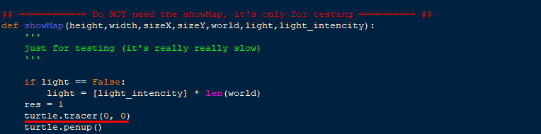
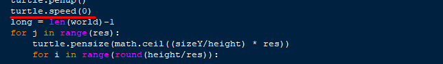
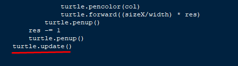

Comment avons-nous optimise le code?
Quant à la répartition des tâches, c'est plutôt Dimitri qui s'est mis à optimiser la performance (niveau vitesse d'exécution) du code. Grâce à seulement 3-4 lignes de code, on a pu faire passer le temps d'exécution moyen de 2 heures (qui varient principalement en fonction des dimensions du monde généré à la fin de l'exécution) a quelques secondes!
Voici ce que nous avons ajoute à notre algorithme afin de minimiser son temps d'exécution:
1. - En ajoutant la fonction "tracer()" de turtle avec les valeurs "0, 0", nous désactivons le
rafraîchissement de l'écran à chaque action du module turtle. Ceci servira ensuite à montrer
le résultat final avec un seul rafraîchissement de l'écran a l'état final du produit de notre
algorithme. 2. - La fonction "speed" de turtle permet de régler la "vitesse" (toujours en temps d'exécution) du module turtle. Elle peut prendre une valeur de 0 (le plus rapide) à 1 (le plus lent) et puis à 10 (rapide). Ici nous avons évidemment choisi la valeur 0 afin de minimiser le temps d'exécution. 3. - Ce dernier permet finalement de réaliser un rafraîchissement de l'écran afin d'afficher le
résultat de l'algorithme. En faisant ce dernier seulement une fois à la toute fin de
l'exécution, nous assurons un temps d'exécution beaucoup moins important en
évitant un rafraîchissement à chaque changement produit par le module turtle.


